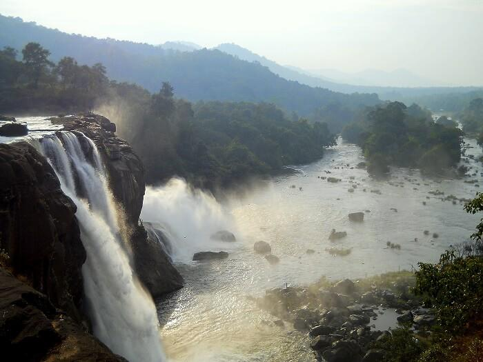

Athirappilly Water Falls
Athirappilly Falls, is situated in Athirappilly Panchayat in Chalakudy Taluk of
Thrissur District in Kerala, India on the Chalakudy River, which originates from
the upper reaches of the Western Ghats at the entrance to the Sholayar ranges.
It is the largest waterfall in Kerala, which stands tall at 80 feet.

Zoo & Museum
Zoo & Museum offers an amazing experience for children and research
students. The small Art Museum within the zoo compound is superb
example of wood-carvings, metal sculptures, Kathakali figures,
ancient jewellery and a wonderful collection of traditional Kerala
lamps. It also houses a large number of historic items such as
swords, jewellery, rocks, stuffed butterflies, etc.